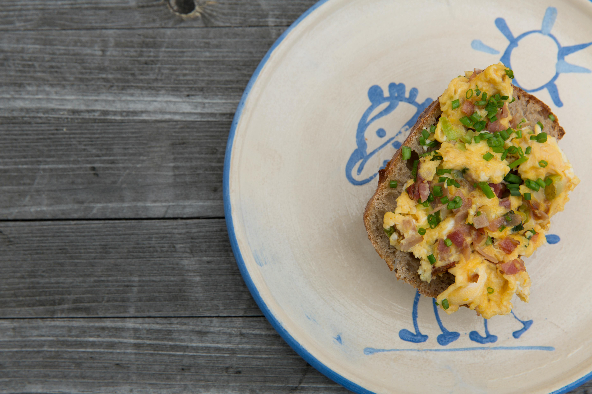

Scrambled Eggs
Recipe created by Kitchen Kitty
Back to Homepage

Description:
These scrambled eggs with cottage cheese are creamy, fluffy, and
make a delicious change from regular scrambled eggs. Perfect with
a slice of tomato and turkey bacon for a delicious and fast
low-carb breakfast.
Ingredients:
- 1 tablespoon butter
- 4 large eggs, beaten
- ¼ cup cottage cheese
- 1 teaspoon chopped fresh chives, or to taste (Optional)
- ground black pepper to taste
Steps:
- Melt butter in a skillet over medium heat. Pour beaten eggs
into the skillet; let cook undisturbed until the bottom of
the eggs begins to firm, 1 to 2 minutes.
- Stir cottage cheese and chives into eggs and season with
black pepper.
- Cook and stir until eggs are nearly set, 3 to 4 minutes more.
See original recipe for additional tips and infomation.